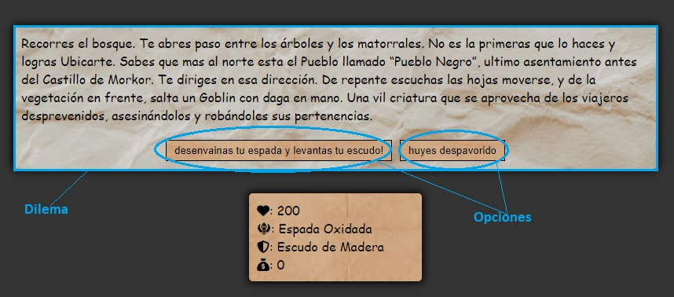
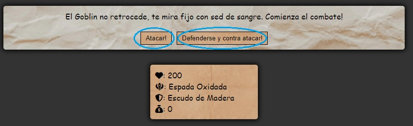
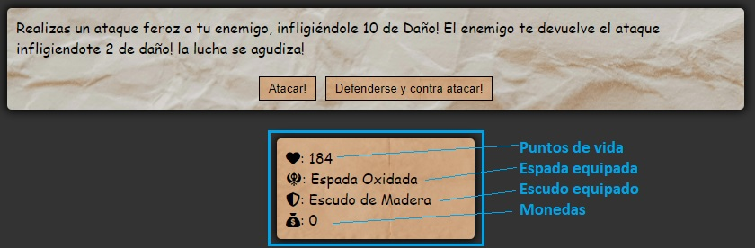

La Saga de Skagard es un juego de Rol de texto, en donde personificaras a un aventurero que deberá liberar el reino de Sakard del tiránico Morkor.
En este juego, se te presentaran varios dilemas donde tendrás que decidir qué hacer. El progreso de tu personaje dependerá de tus decisiones: ¿Gastaras el dinero que consigues en tus aventuras en una espada nueva? ¿O lo usaras para ayudar a alguien necesitado? Tú eliges.
Pero tu aventura no estará exenta de peligros, algunas decisiones te pueden llevar hasta las guaridas de enemigos feroces que te presentaran batalla.
Cuando se desencadene una batalla, podrás elegir entre atacar, o defenderte y contratacar con un golpe crítico. ¡Pero cuidado! Tu enemigo puede realizar estas mismas acciones también. El daño que realices, la probabilidad de asestar el golpe cuando tu enemigo decide defenderse o bien la probabilidad que tienes de defenderte del ataque enemigo dependen de la calidad del equipo que lleves puesto.
Tu equipo actual, así como también tus puntos de vida y las monedas que llevas contigo se visualizaran en la caja de personaje, debajo de los dilemas. ¡Préstale atención todo el tiempo!
¡La aventura te espera! ¿estarás a la altura?